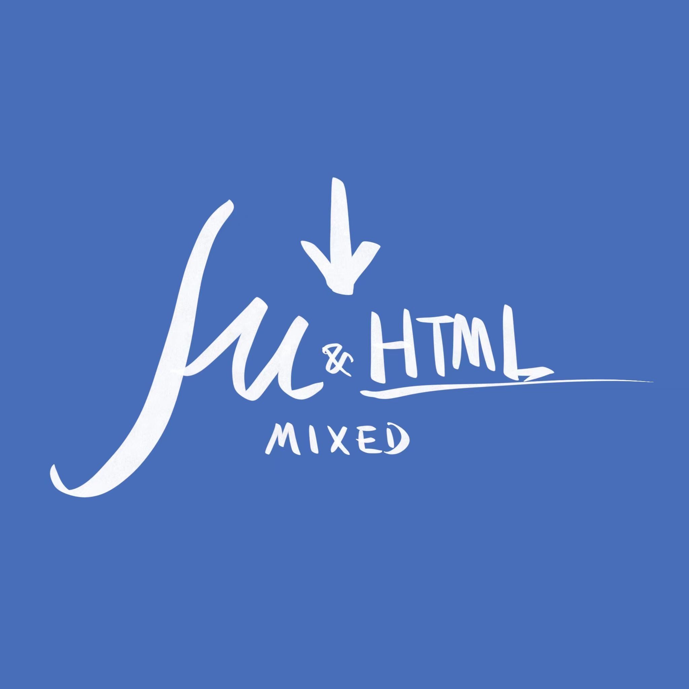
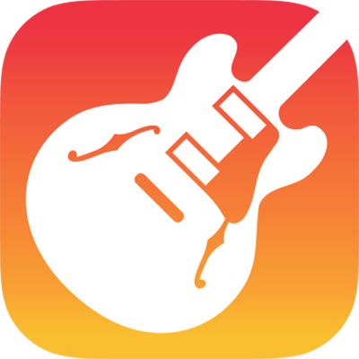
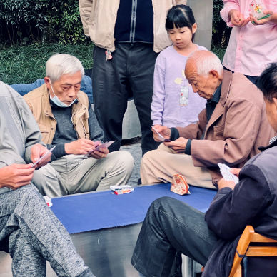
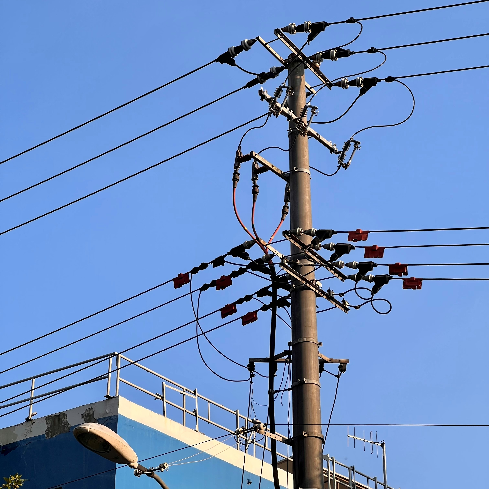

艇 仔粥…… 滾燙熱湯，冰冷生蠔；生猛海鮮，值得啖一陣 下弦之伍 搞錯，但都是蜘蛛啦 爬取Steam游戲榜單 分析的第一步：打開Python！ 加點個性 這個頁面好看嗎？  Mkdocs 混合頁面 markdown+HTML+CSS TapWater 再來七杯自來水，持續更新... 333 敬請期待 Photographic Project: 333  模仿、抄襲、致敬，生活。 主頁面敬請期待 我説： 你不好好學習，將來怎麽養活自己？  關於選擇 那年是七年級的夏天，我第一次明白：只要擁有白石洲一棟樓，一世就都不用愁。 那晚的流星……  許願 看到流星，記得按A鍵許願 秋末 冬至 書寫夢境裏的湯圓大軍 電子湯圓 “刺繡五紋添弱線，吹葭六管動浮灰。” 更多首頁導覽内容，敬請期待下一次更新……